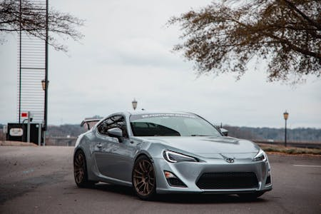
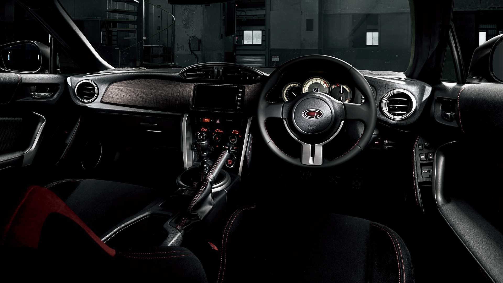
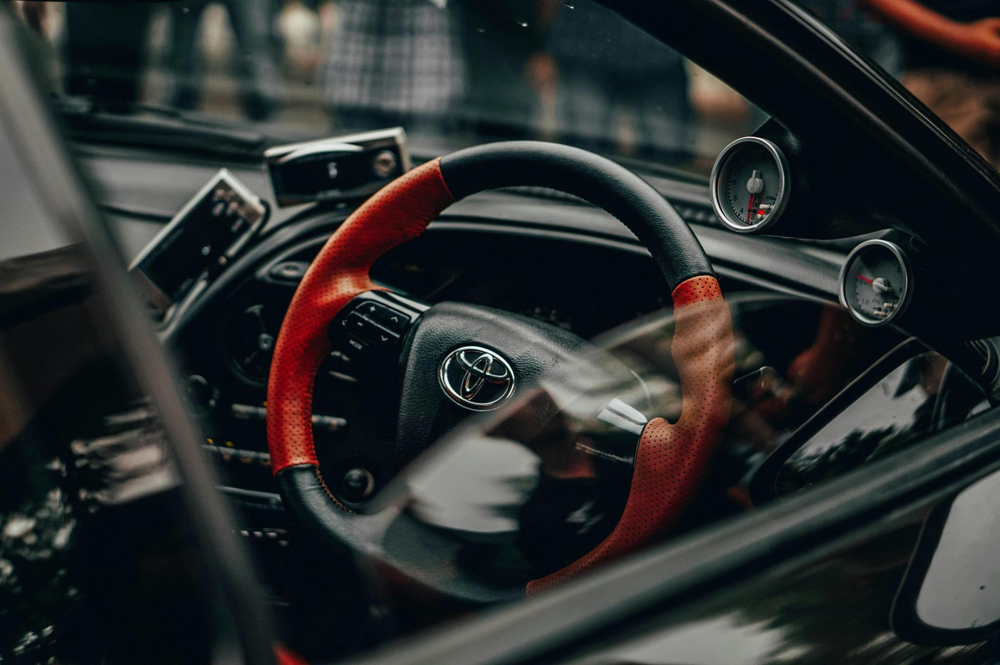

Toyota GT86
The GT86 is all about driving pleasure. Its precise steering, balanced chassis, and responsive throttle make it ideal for those who love to be in control of the car’s dynamics. The car doesn’t rely on turbochargers or excessive horsepower; instead, it delivers fun in a more accessible and rewarding way. Some critics point out that the engine could use more power, but many fans appreciate its focus on handling and driver involvement over straight-line speed.The sport seats are firm and offer excellent lateral support, holding the driver and passenger in place during tight corners. Their design is practical rather than luxurious, reflecting the car’s performance-oriented character. For longer drives, the seats provide a comfortable balance between support and comfort, ensuring that you stay well-positioned without excessive cushioning that might reduce feedback from the car.
The Toyota GT86 is a compact sports car that has earned a reputation for being a driver’s car, combining affordability, rear-wheel-drive dynamics, and a lightweight, balanced chassis.Launched in 2012 as a collaboration between Toyota and Subaru, it is also sold under different names,
such as the Subaru BRZ and the Scion FR-S (until the Scion brand was discontinued in 2016).
1. Engine and Performance
The GT86 is powered by a 2.0-liter flat-four (boxer) engine developed by Subaru, which produces
around 200 horsepower and 151 lb-ft of torque. The engine layout helps to lower the car’s
center of gravity, improving handling and cornering. While the power output is modest compared to
some rivals, the GT86's emphasis is on driving experience rather than sheer speed. The car is available
with either a 6-speed manual or a 6-speed automatic transmission. The manual is favored by enthusiasts
for its engagement and connection to the car’s performance |
 |
.jpg) |
|
2. Rear-Wheel Drive and Handling
One of the GT86's standout features is its rear-wheel-drive layout, a rarity in modern, affordable sports cars. This gives it a more traditional sports car feel, making it a popular choice for those who enjoy spirited driving or even drifting. The suspension is tuned for sharp handling, with excellent feedback and agility. The car’s weight distribution is close to 50:50, contributing to its balanced handling and making it particularly fun to drive on twisty roads or the track.
3. Lightweight Design
Weighing around 2,800 pounds, the GT86 is relatively light, which further enhances its performance and handling. The lightweight design, coupled with a low center of gravity, means the car feels nimble and responsive, offering great cornering ability. The minimalistic approach to weight also reinforces the car’s identity as a purist’s sports car.
4. Minimalistic Interior
Inside, the GT86 has a driver-focused, functional interior. While it doesn't offer luxurious materials
or high-end tech, it has everything you need for an engaging drive. The cabin features simple but
upportive sport seats, a straightforward dashboard, and a compact steering wheel. The back seats
are more for show or small storage, as they are cramped and not particularly practical for adult
passengers. The trunk space is also limited, but the rear seats fold down to provide additional room. |
 |
 |
5. Styling and Aesthetics
The GT86’s design is sleek and sporty, with aerodynamic lines, a low-slung profile, and an aggressive front fascia. Its relatively compact size adds to its agility on the road. The design is modern but simple, aiming to appeal to enthusiasts who appreciate a classic, no-nonsense sports car look. Over the years, there have been minor styling updates, but the overall silhouette has remained consistent.